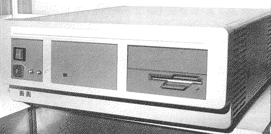

Previous
Next
TOC
Der TT030 Prototyp
Der TT030 Prototyp wie er auf der Cebit im 2. Stockwerk des Atari
Standes hinter verschlossenen Türen nur eingeweihten präsentiert
wurde.
Damals noch mit DD-Diskettenlaufwerk und zwei
Westernbuchsen an der
Frontseite und 8 MB Rambestückung auf der Platine.

Kapitel Der TT030 Prototyp, Seite 1